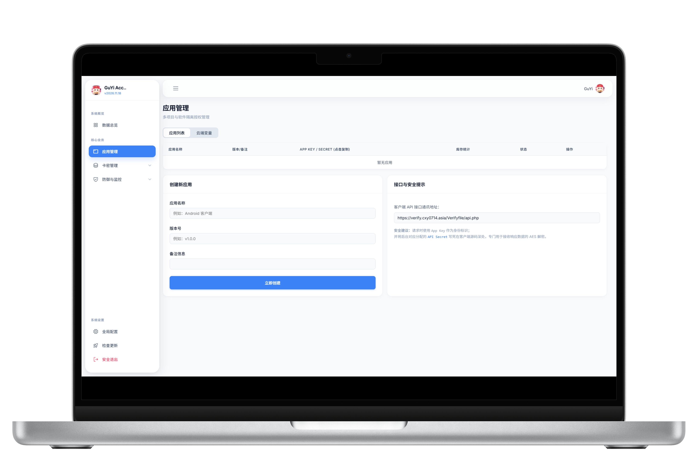
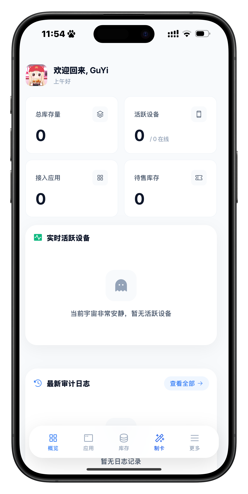

卡密验证
通过应用密钥和卡密验证授权。你也可以提供稳定的设备哈希值，让服务器将授权与当前设备关联，并执行已配置的设备策略。
// API 响应采用 AES-256-GCM 认证加密。
提供多语言客户端示例，帮助开发者快速接入软件授权验证。


GuYi Access 是一个开源软件授权项目，可将应用程序接入统一的授权验证服务。项目包含 PHP 后端、JSON API 和客户端集成示例。你可以将后端部署到自己的服务器，再为各个客户端配置该部署环境提供的 API 地址。
通过应用密钥和卡密验证授权。你也可以提供稳定的设备哈希值，让服务器将授权与当前设备关联，并执行已配置的设备策略。
记录授权所绑定的设备。同一设备重复验证时会刷新活动记录；用户也可以按照服务器规则，通过自助解绑功能将授权转移到另一台设备。
通过 API 获取应用更新信息和公开云变量。开发文档还介绍了用于自动分发授权卡密的管理接口。
当前集成指南介绍了加密响应格式、密钥处理方式、解密步骤、JSON 响应结构及常见错误代码，帮助客户端统一处理验证结果。
文档提供 Python、JavaScript / Node.js、PHP、C#、Go、Java、C++ 和 Rust 客户端示例。每个示例均演示如何发送验证请求、处理 API 响应，以及在需要时解密 AES-256-GCM 数据。请求参数、部署要求、安全说明和响应代码请参阅 GuYi Access 开发文档。
部署环境要求：文档列出的基础环境为 PHP 7.2 或更高版本，并启用 PDO 和 JSON 扩展；数据库使用 MySQL 5.6 或更高版本。API 运行在你自行部署的服务端，项目网站仅提供文档和下载入口，并不是通用 API 地址。